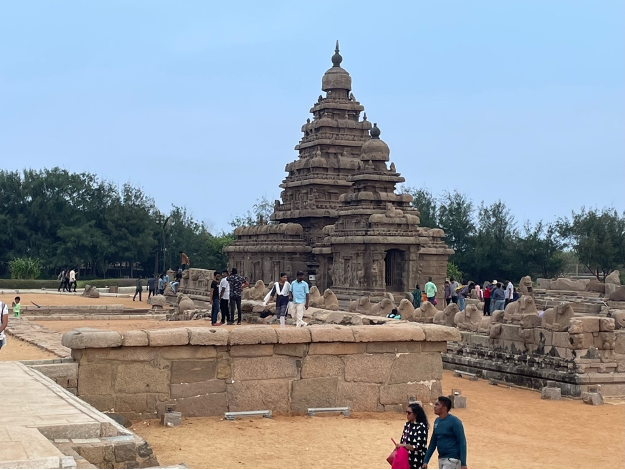
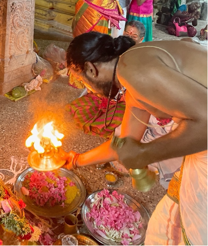
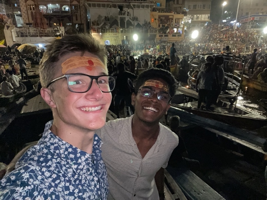
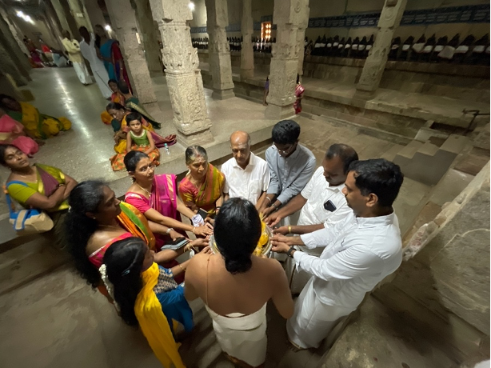
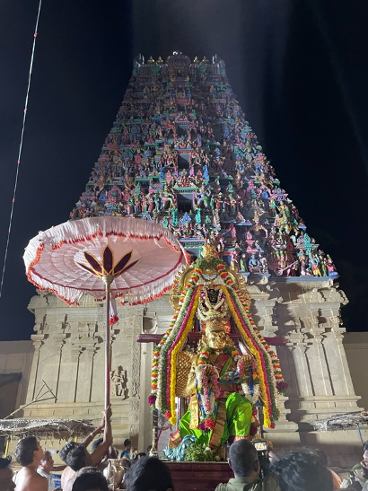

Introduction On Habitats On Conspicuity On Adolescence On Groups On Money On Logicstics On Pockets On Piety Appendix A: Glossary Appendix B: Varanasi Tour Roster Appendix C: Works Cited
I'm hosted with GitHub Pages
Hinduism is an immanent and tactile religion, closely ingrained within Indian daily life. Hindus comprise 87 percent of the population of Tamil Nadu. Many have attempted to survey the complex landscape of Hindu theory and belief. Certain sources purport that Hinduism defies definition as a religion because it is far broader than that. While this statement may be true, it is also unhelpful. I find it prudent to set aside the prickly questions related to belief and instead focus on the concrete realities concerned with action. My time in India gave me a close look into Hindu praxis—how those religious beliefs manifest themselves in devotees’ day-to-day behavior. One of Hinduism’s central tenets—dharma—is intimately related to the day-to-day duties and behaviors of the individual. I intend to take an ethnographic approach to understand the myriad Hindu religious behaviors I observed. While religious beliefs that are considered to be more Western tend to live in the abstract theoretical realm of belief, Hinduism lives in the communities and customs of a particular culture.
Hindu praxis expresses itself on two axes—individualistic piety and communitarian religion. The word “piety” comes from the Latin pietas, which means “dutiful conduct.” Thus, by adhering to certain forms of dutiful conduct, the individual practices piety. These personal acts of piety are often motivated by a desire to achieve what is called moksha, or liberation from the cycle of reincarnation and reconnection with the unity of the universe. In that sense, these behaviors often appear quite transactional since they attempt to earn moksha through pious behavior. Conversely, the word “religion” comes in part from the Latin ligere, which means “to bind together.” Thus, religion binds together the community around shared values and ideas. The community has a vested interest in promoting group cohesion, societal stability, and collective effervescence. Communitarian religion brings the community together and helps to ensure its survival.
These axes are neither exhaustive nor mutually exclusive—the individual and the community engage in a dance of reciprocal determinism, each impacting the other. Individual acts of piety contribute to the religious tenor of the broader community and shape the collective religious experience. In turn, the religious environment and customs of the community inform what each individual considers to be pious conduct.
Temples (kovilkal in Tamil) provide a good illustration of the difference between individualistic piety and communitarian religion. While each kovil has its own unique structural and aesthetic idiosyncrasies, each adheres to a fairly consistent pattern. Most Tamil kovil are made from stone—a development from the mid-to-late first millennium according to Indologist David Shulman. The interior of kovilkal have two primary levels—an upper level and a lower level. The upper level, which is usually in the center and around the edges of the kovil, includes several shrines, each containing a deity statue. The lower level, which usually carves a moat-like path around the center of the upper level, is designed for the purpose of circumambulation.

Shore Temple at Mahabalipuram
This form changes its function based on the environment. In the cosmopolitan cities, kovilkal serve the needs of individualistic piety. Devotees flock to kovilkal to see the deity, pray, circumambulate, and leave. Long lines form in front of shrines as individuals shuffle through the queue to check off the boxes for their religious duties. In urban kovilkal, worship remains an individual endeavor closely attached to personal piety. Conversely, in rural towns, kovilkal serve the needs of communitarian religion. In village kovilkal, communities come together for large functions and gatherings. Worshippers, rather than shuffling through the lower level of the kovil, linger and even sit down on the upper level of the kovil. After worshipping, devotees come together over a meal provided by the kovil.
The puja (or ritual) marks the intersection between the two axes of Hinduism. Shulman explicitly describes the puja as focused on the external and material world. Pujakal exist in myriad forms that are appropriate for a plethora of situations—coming-of-age celebrations, weddings, pilgrimages, celebrations of life, funerals, and day-to-day worship. In one routine puja, a priest holds a bell in his left hand and a deepam (lamp plate) with burning incense in his right. He rings the bell while circling the deepam in front of the deity statue. The priest then brings out the deepam with the burning incense as devotees quickly hover their hands above the flame and then fold their hands in prayer. The whole time, the priest chants sacred Sanskrit verses. Sometimes, a drum called a thavil and a reed instrument called a nathaswaram accompany his chanting. The priest then takes sacred white or red ash called vubhuti from the deepam and smears it on the foreheads of the worshippers. The vibhuti is made from burnt cow dung, which is called saani in Tamil—not to be confused with the word saami, which is the Tamil word for deity. The vibhuti, worn daily by most Tamils, is a perpetual reminder of the impermanence of life. Shaivites (followers of Shiva) wear white vibhuti to symbolize how they will be cremated when they die. Vaishnavites (followers of Vishnu) wear red vibhuti to symbolize how they will be buried when they die.

Priest with bell and deepam
Individual piety often spurs pujakal, but pujakal often catalyze community building. For example, a pilgrimage to the Ganges River is a bucket-list item for many Hindus across India. Many individuals see this as a necessary step to ensure their salvation. Each evening, thousands of individuals flock to the banks of the Ganges River to participate in the Ganga Aarti Puja, a ritual designed to honor the Ganges River, which many Indians consider to be their symbolic mother. Individuals crowd together on the shore and on wooden boats as priests complete a choreographed dance with large cascading conical fire lamps. Ringing bells, clapping hands, and chanting voices fill the air. Though it may be trite to say, the fervor of the puja welds the many into one. It is in these moments of collective effervescence that individualistic piety becomes communitarian religion.

Muthu and me at the Ganga Aarti Puja
Muthu’s aaya (grandmother) presents a case study on the interplay between individual piety and collective religion. Muthu described his aaya’s style of worship as inherently transactional, concerned with earning salvation through demonstrations of individual piety. When I first met Muthu’s aaya, Muthu and I walked with her to her local kovil. While there, we listened to her recite a Hindu prayer 108 times—an auspicious number in the Hindu religion. I closely watched her count on her fingers as she completed each recitation. Beginning with her pinkie, she raised each finger on her right hand until all five fingers were raised. Then, beginning with her thumb, she lowered each finger until her right hand formed a fist. Each time she completed this cycle, she logged it using the fingers on her left hand. Between recitations, she would intermittently check her phone for calls. As the recitations progressed, they would become faster and more slurred. Towards the end, exasperation began to permeate her tone of voice. Muthu’s aaya believed that her recitations would increase the likelihood that she would receive salvation—a textbook illustration of individualistic piety.
The impact of Muthu’s aaya’s personal piety extends beyond her person. Towards the end of my visit, Muthu’s aaya hosted a two-day religious function for her local community and extended family. The first day was a 70th-birthday puja for her and Muthu’s ayya (grandfather) and took place at the Soorakudi Meenakshi Sundareswarambal Temple. Priests conducted a series of pujakal on behalf of Muthu’s aaya and ayya. These pujakal included a blessing for the couple, an archana (prayer for family prosperity), abhishekam (libation baths for the deity statues), and plenty of circumambulation of the shrines.

Archana (prayer for family prosperity)
The second day was a puja for Garuda, who is the eagle of the deity Vishnu in Hindu mythology. On the second day of the function, a hoard of young men carried a 10-foot-tall Garuda statue around the Ariyakudi Vishnu Temple (at one point, the statue knocked down a power line). This part of the puja was supplemented by exploding firecrackers, more blessings, another archana, and even more circumambulation. Between festivities, Muthu’s aaya catered breakfast, lunch, afternoon snack, and dinner for dozens of people.

Garuda statue in front of the Ariyakudi Vishnu Temple
Muthu’s aaya blew 2 lakh rupees (200,000 rupees or $2,500) on the pujakal and 3 lakh rupees ($3,750) on the catering for a total of 5 lakh rupees ($6,250) on the entire function. This kind of money is not small potatoes in India. Muthu’s family doesn’t know the size of aaya and ayya’s nest egg or whether these events induced financial strain. The primary impetus for the function was a desire to honor a 40-year-old promise she made to conduct a puja for Garuda. Muthu speculates that seeing her friends throw similar functions also pressured his aaya to throw a function to compete with them. In any case, the conception of this function was steeped in individualistic piety.
But her demonstrations of individual piety fostered religious community as a byproduct. The function brought together friends and relatives whom the pandemic had separated for many months. Those friends and relatives were able to share food, memories, and laughs. Muthu’s aaya, by throwing her function, strengthened the community around her. In this way, individualistic piety translates into communitarian religion in the aggregate. This process is fundamental to how local communities form and sustain themselves in the Indian subcontinent. As a woman who was a trustee of the Ariyakudi Vishnu Temple said, “We live by faith and belief.”